尺度先行
依据墙面宽高、观看距离与家具比例，确定横幅、竖幅或圆形装裱。
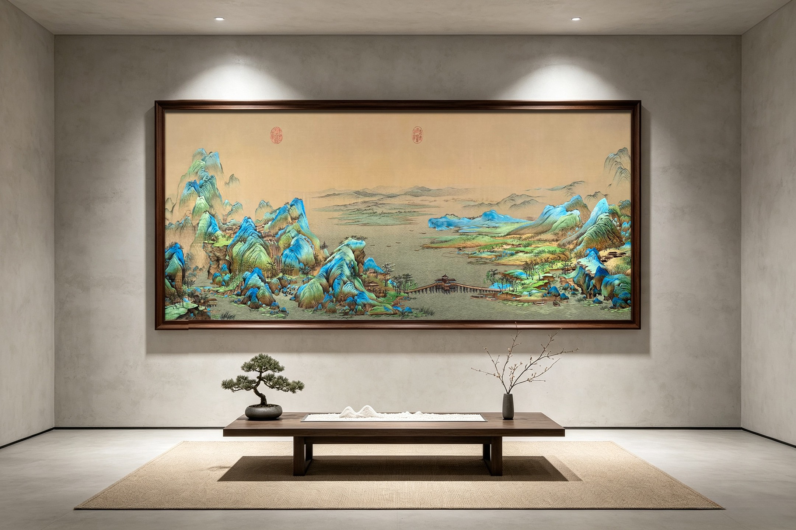
ART IN PLACE · 作品进入空间
别墅挂画的价值，不只在作品本身，更在它与墙面比例、家具尺度、动线视角及自然光之间形成的关系。杨雪刺绣工作室以真实空间为起点，重新组织题材、色彩、构图与装裱，让苏绣既保留丝线的细腻，又能承接大尺度建筑空间。
依据墙面宽高、观看距离与家具比例，确定横幅、竖幅或圆形装裱。
结合朝向、重点照明与丝线反光，调整色阶与画面明暗关系。
从居所材质与生活方式提炼题材，让东方意境自然进入日常。
PANORAMIC LANDSCAPE · 横幅山水
横幅作品适合客厅主墙、书房长案与会客空间。山水、牡丹与花鸟长卷沿视线舒展，在保持场面开阔的同时，为大体量墙面建立安静而稳定的视觉重心。
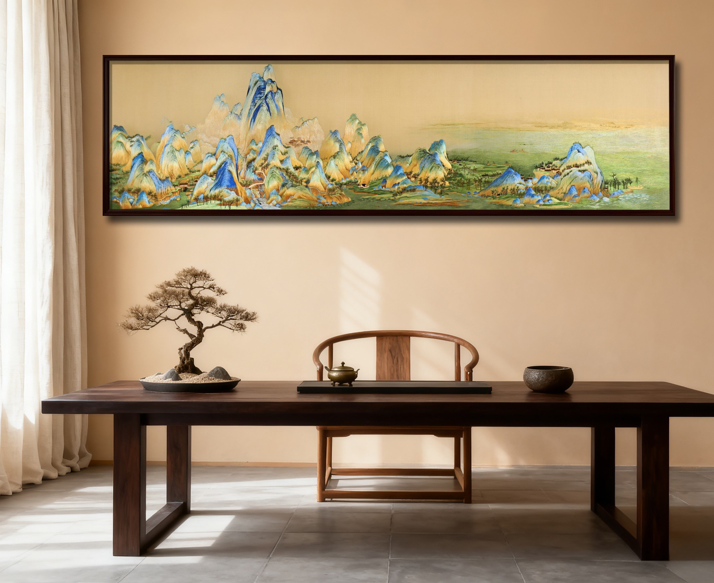
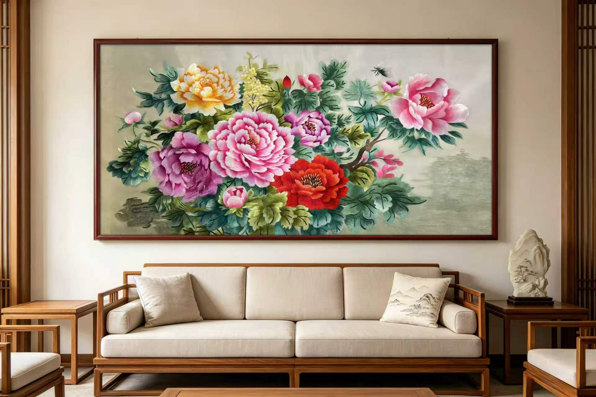
VERTICAL & ROUND · 竖幅与圆景
竖幅适合玄关、挑高墙面与楼梯转角，圆形装裱则更适合餐厅、茶室与过渡空间。不同形制不是简单更换外框，而是依据建筑开口与观看方式重新安排画面重心。
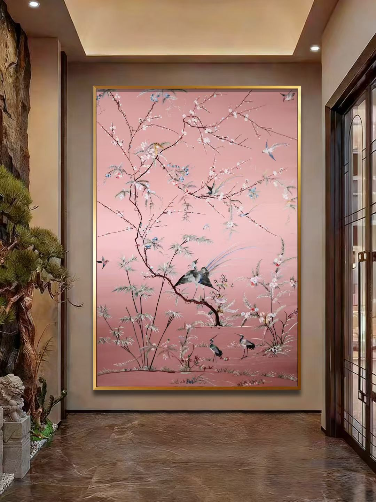
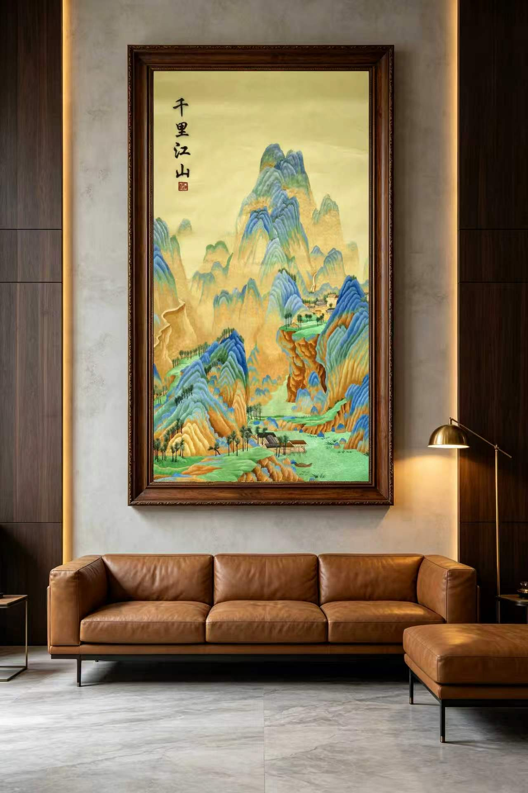
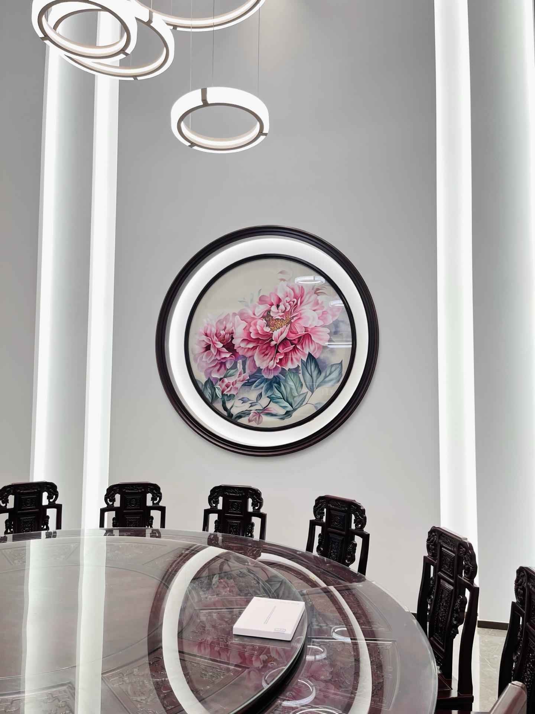
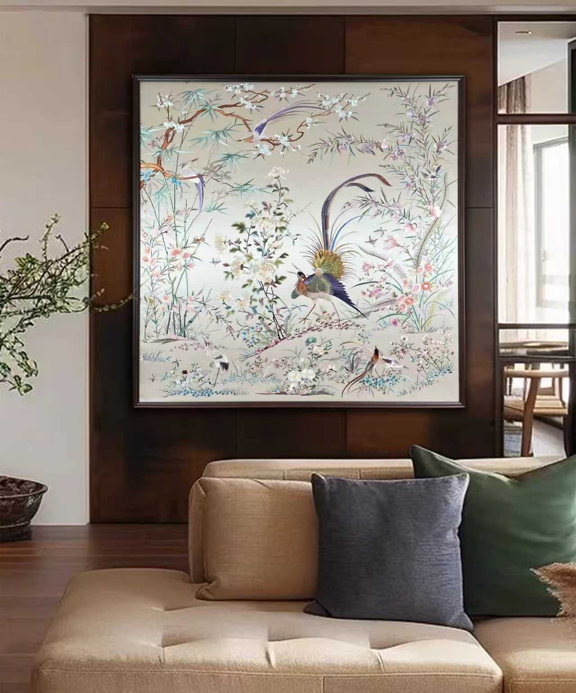
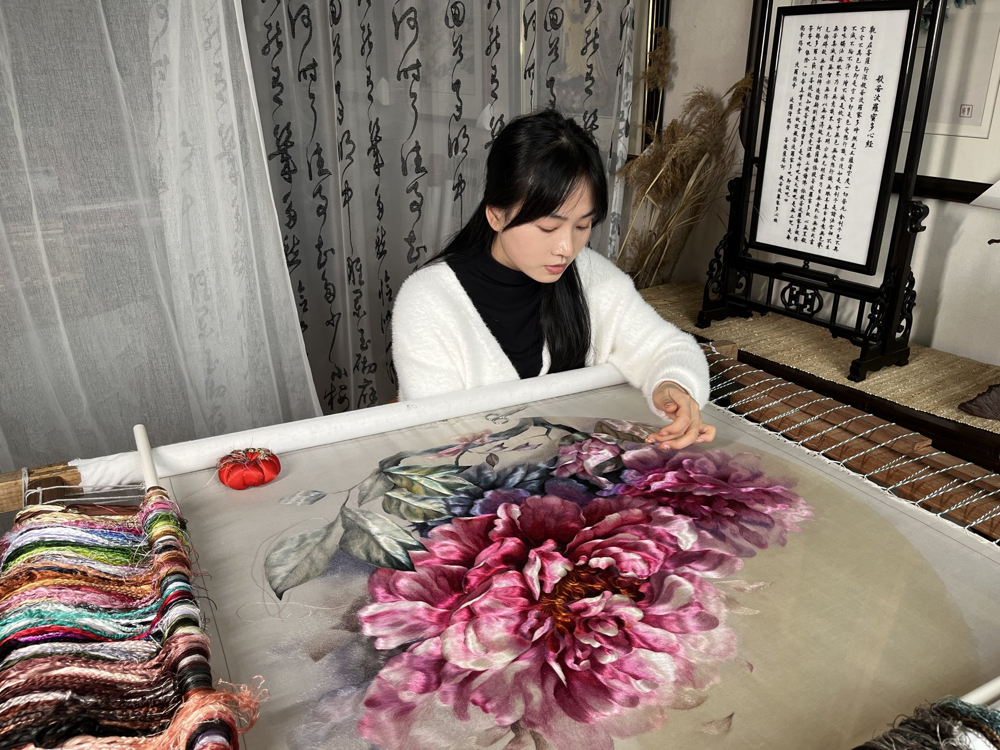
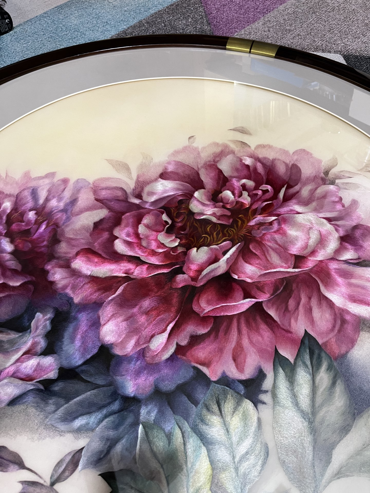
MADE BY HAND · 从线到墙
大幅挂画需要同时兼顾远距离的整体气势与近距离的丝线质感。工作室从画稿、配色到上绷绣制全程推进，并根据最终空间校准细节密度与观看效果。
SELECTED INTERIORS · 空间选例
从牡丹、荷花到山水花鸟，题材选择既回应审美偏好，也结合空间用途与家庭寓意。作品可以端庄，也可以轻盈，但都应给家具与人的活动留下余地。
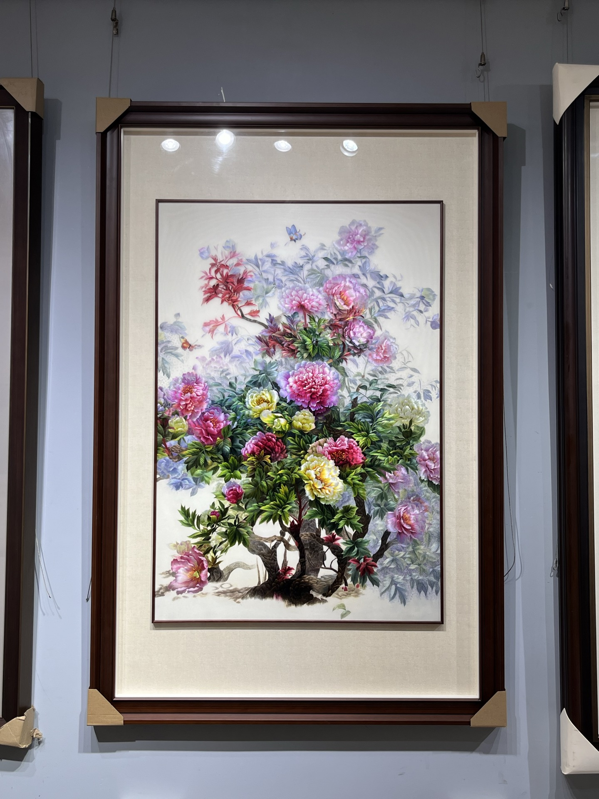
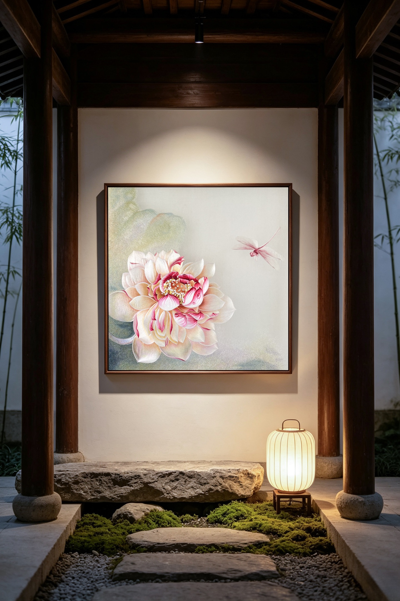
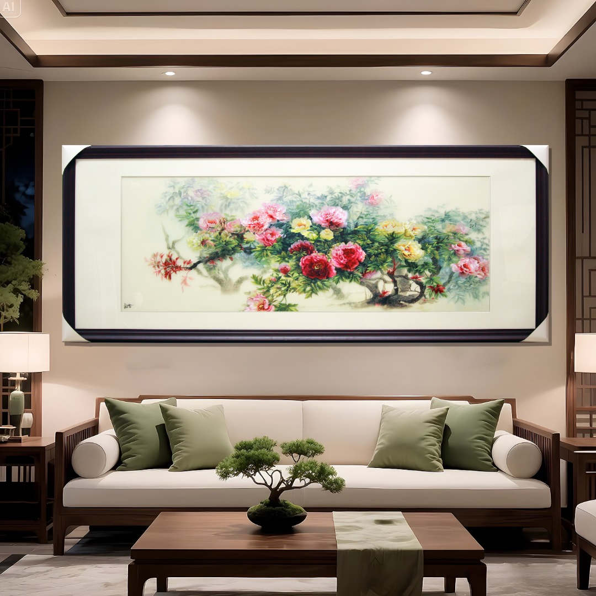
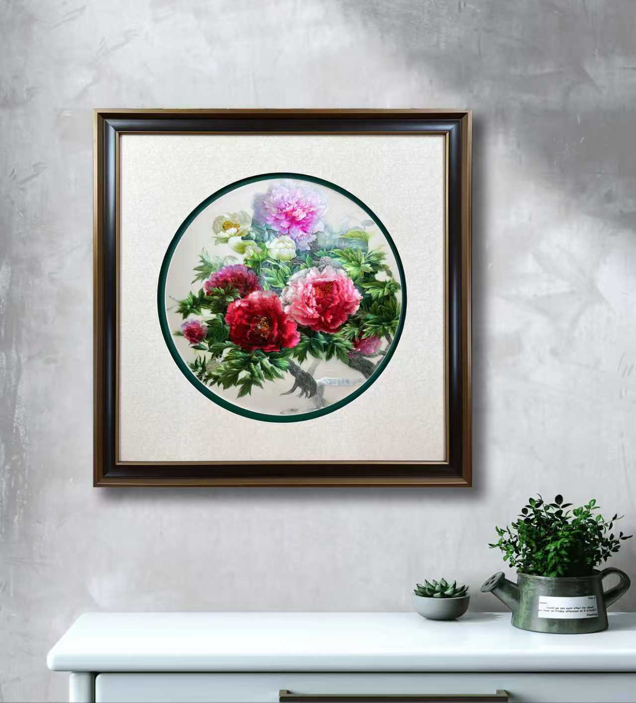
BESPOKE PROCESS · 私人定制
定制不是在现成图库中选一张图，而是让题材、尺度、绣法与装裱共同回应真实居所。前期资料越完整，成品与空间的关系越准确。
提供墙面正视照片、宽高尺寸、家具位置与环境光信息。
确定题材、构图、画幅、丝线色谱与装裱方向，并完成效果预演。
校稿后上绷落针，按作品体量与复杂度分阶段沟通制作进度。
完成装裱与成品复核，并给出悬挂高度、灯光与日常养护建议。
欢迎携带空间照片与尺寸咨询。工作室将从使用场景、题材寓意与整体风格出发，为您的居所提供一对一刺绣挂画方案。